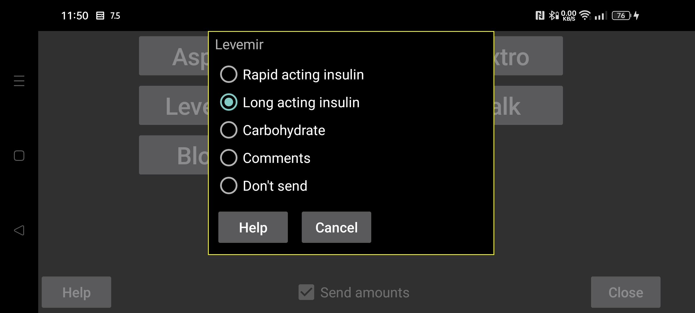

ar be de es fr hi nl pl pt ru tr uk uz zh en
Как и в случае с Libreview, вы также можете указать, как представлять суммы через сервер Nightscout в Juggluco.
Выберите, как суммы в Juggluco, введенные под определенной меткой, должны отправляться в Libreview. Можно отправить несколько типов сумм с одной и той же меткой Libreview. Например, если вы оцениваете продукты, содержащие углеводы и чистую глюкозу, под отдельными метками в Juggluco, вы можете указать для обоих, что они должны отправляться в Libreview как углеводы.
Что касается углеводов, можно умножить количество, указанное в Juggluco, на определенное число, чтобы преобразовать другие единицы в граммы. Если вы считаете порции Juggluco по 10 грамм, вы можете ввести здесь 10, чтобы граммы были отправлены в Libreview.
Комментарии означают, что сумма отправляется в Libreview так же, как если бы вы добавили комментарии в Librelink. Если вы укажете здесь комментарии, будет отправлена метка плюс номер, введенный для этой метки. Например: «Велосипед 50», если у вас был ярлык «Велосипед» и вы ввели под этим ярлыком «50». «Велосипед 50» будет показан под графиком «Ежедневника» в Libreview в указанное время.